Web Server Statistics for findi.magentaweb.org
Web Server Statistics for findi.magentaweb.org
Program started on Sun, Nov 30 2025 at 7:16 AM.
Analyzed requests from Sat, Sep 27 2025 at 3:29 AM to Sun, Nov 30 2025 at 6:38 AM (64.13 days).
Web Server Statistics for findi.magentaweb.orgProgram started on Sun, Nov 30 2025 at 7:16 AM.
Analyzed requests from Sat, Sep 27 2025 at 3:29 AM to Sun, Nov 30 2025 at 6:38 AM (64.13 days).
(Go To: Top | General Summary | Monthly Report | Daily Summary | Hourly Summary | Domain Report | Organization Report | Failed Referrer Report | Referring Site Report | Browser Report | Browser Summary | Operating System Report | Status Code Report | File Size Report | File Type Report | Directory Report | Request Report)
Figures in parentheses refer to the 7-day period ending Nov 30 2025 at 7:16 AM.
Successful requests: 671 (37)
Average successful requests per day: 10 (5)
Successful requests for pages: 612 (30)
Average successful requests for pages per day: 9 (4)
Failed requests: 653 (118)
Redirected requests: 7 (4)
Distinct files requested: 83 (250)
Distinct hosts served: 216 (273)
Data transferred: 69.88 megabytes (6.85 megabytes)
Average data transferred per day: 1.09 megabytes (0.98 megabytes)
(Go To: Top | General Summary | Monthly Report | Daily Summary | Hourly Summary | Domain Report | Organization Report | Failed Referrer Report | Referring Site Report | Browser Report | Browser Summary | Operating System Report | Status Code Report | File Size Report | File Type Report | Directory Report | Request Report)
Each unit ( ) represents 8 requests for pages or part thereof.
) represents 8 requests for pages or part thereof.
| month | #reqs | #pages | |
|---|---|---|---|
| Sep 2025 | 155 | 139 |   |
| Oct 2025 | 299 | 268 |  |
| Nov 2025 | 217 | 205 |  |
Busiest month: Oct 2025 (268 requests for pages).
(Go To: Top | General Summary | Monthly Report | Daily Summary | Hourly Summary | Domain Report | Organization Report | Failed Referrer Report | Referring Site Report | Browser Report | Browser Summary | Operating System Report | Status Code Report | File Size Report | File Type Report | Directory Report | Request Report)
Each unit () represents 4 requests for pages or part thereof.
| day | #reqs | #pages | |
|---|---|---|---|
| Sun | 188 | 179 |  |
| Mon | 32 | 27 | |
| Tue | 23 | 19 | |
| Wed | 45 | 38 | |
| Thu | 169 | 162 | |
| Fri | 65 | 48 | |
| Sat | 149 | 139 | |
(Go To: Top | General Summary | Monthly Report | Daily Summary | Hourly Summary | Domain Report | Organization Report | Failed Referrer Report | Referring Site Report | Browser Report | Browser Summary | Operating System Report | Status Code Report | File Size Report | File Type Report | Directory Report | Request Report)
Each unit () represents 4 requests for pages or part thereof.
| hour | #reqs | #pages | |
|---|---|---|---|
| 0 | 17 | 13 | |
| 1 | 16 | 15 | |
| 2 | 10 | 6 | |
| 3 | 56 | 51 | |
| 4 | 17 | 15 | |
| 5 | 17 | 15 | |
| 6 | 20 | 18 | |
| 7 | 10 | 9 | |
| 8 | 18 | 10 | |
| 9 | 12 | 8 | |
| 10 | 21 | 18 | |
| 11 | 20 | 16 | |
| 12 | 8 | 7 | |
| 13 | 148 | 146 | |
| 14 | 17 | 13 | |
| 15 | 149 | 148 | |
| 16 | 65 | 64 | |
| 17 | 5 | 5 | |
| 18 | 3 | 3 | |
| 19 | 3 | 2 | |
| 20 | 7 | 5 | |
| 21 | 12 | 11 | |
| 22 | 11 | 9 | |
| 23 | 9 | 5 | |
(Go To: Top | General Summary | Monthly Report | Daily Summary | Hourly Summary | Domain Report | Organization Report | Failed Referrer Report | Referring Site Report | Browser Report | Browser Summary | Operating System Report | Status Code Report | File Size Report | File Type Report | Directory Report | Request Report)
Listing domains, sorted by the amount of traffic.
| #reqs | %bytes | domain |
|---|---|---|
| 671 | 100% | [unresolved numerical addresses] |
(Go To: Top | General Summary | Monthly Report | Daily Summary | Hourly Summary | Domain Report | Organization Report | Failed Referrer Report | Referring Site Report | Browser Report | Browser Summary | Operating System Report | Status Code Report | File Size Report | File Type Report | Directory Report | Request Report)
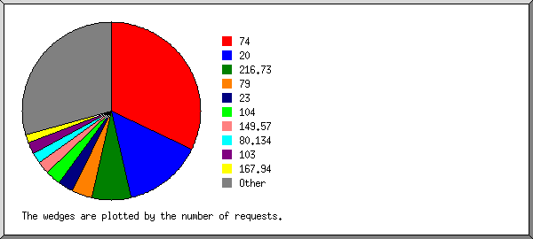
Listing the top 20 organizations by the number of requests, sorted by the number of requests.
| #reqs | %bytes | organization |
|---|---|---|
| 156 | 0.23% | 74 |
| 141 | 2.08% | 20 |
| 36 | 3.93% | 79 |
| 28 | 0.14% | 23 |
| 25 | 2.03% | 104 |
| 23 | 0.12% | 149.57 |
| 20 | 1.99% | 103 |
| 18 | 5.84% | 80.134 |
| 11 | 3.89% | 52 |
| 11 | 3.87% | 146.70 |
| 10 | 3.87% | 61.8 |
| 9 | 7.73% | 167.94 |
| 8 | 0.04% | 3 |
| 8 | 9.65% | 66.132 |
| 7 | 0.03% | 142.93 |
| 6 | 0.03% | 35 |
| 6 | 0.03% | 152.39 |
| 5 | 3.87% | 206.168 |
| 5 | 1.93% | 134.209 |
| 5 | 0.03% | 185.203 |
| 133 | 48.66% | [not listed: 62 organizations] |
(Go To: Top | General Summary | Monthly Report | Daily Summary | Hourly Summary | Domain Report | Organization Report | Failed Referrer Report | Referring Site Report | Browser Report | Browser Summary | Operating System Report | Status Code Report | File Size Report | File Type Report | Directory Report | Request Report)
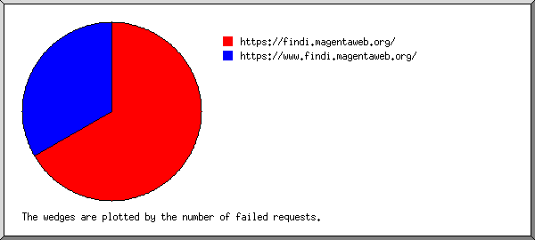
Listing referring URLs, sorted by the number of failed requests.
| #reqs | URL |
|---|---|
| 4 | https://findi.magentaweb.org/ |
| 2 | https://www.findi.magentaweb.org/ |
(Go To: Top | General Summary | Monthly Report | Daily Summary | Hourly Summary | Domain Report | Organization Report | Failed Referrer Report | Referring Site Report | Browser Report | Browser Summary | Operating System Report | Status Code Report | File Size Report | File Type Report | Directory Report | Request Report)
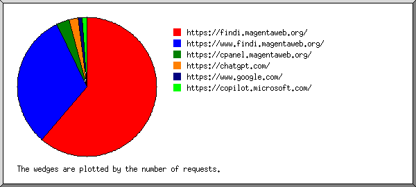
Listing referring sites, sorted by the number of requests.
| #reqs | site |
|---|---|
| 52 | https://findi.magentaweb.org/ |
| 13 | https://www.findi.magentaweb.org/ |
| 3 | https://cpanel.magentaweb.org/ |
| 2 | https://chatgpt.com/ |
| 1 | https://www.google.com/ |
| 1 | https://copilot.microsoft.com/ |
(Go To: Top | General Summary | Monthly Report | Daily Summary | Hourly Summary | Domain Report | Organization Report | Failed Referrer Report | Referring Site Report | Browser Report | Browser Summary | Operating System Report | Status Code Report | File Size Report | File Type Report | Directory Report | Request Report)
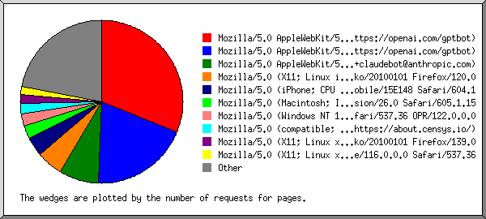
Listing the top 40 browsers by the number of requests for pages, sorted by the number of requests for pages.
| #reqs | #pages | browser |
|---|---|---|
| 283 | 282 | Mozilla/5.0 AppleWebKit/537.36 (KHTML, like Gecko; compatible; GPTBot/1.2; +https://openai.com/gptbot) |
| 49 | 47 | Mozilla/5.0 (X11; Linux i686; rv:109.0) Gecko/20100101 Firefox/120.0 |
| 35 | 35 | Mozilla/5.0 (iPhone; CPU iPhone OS 18_5 like Mac OS X) AppleWebKit/605.1.15 (KHTML, like Gecko) CriOS/138.0.7204.156 Mobile/15E148 Safari/604.1 |
| 26 | 24 | Mozilla/5.0 (Macintosh; Intel Mac OS X 10_15_7) AppleWebKit/605.1.15 (KHTML, like Gecko) Version/26.0 Safari/605.1.15 |
| 25 | 23 | Mozilla/5.0 (Windows NT 10.0; Win64; x64) AppleWebKit/537.36 (KHTML, like Gecko) Chrome/138.0.0.0 Safari/537.36 OPR/122.0.0.0 |
| 14 | 14 | Mozilla/5.0 (X11; Linux x86_64) AppleWebKit/537.36 (KHTML, like Gecko) Chrome/116.0.0.0 Safari/537.36 |
| 13 | 13 | Mozilla/5.0 AppleWebKit/537.36 (KHTML, like Gecko; compatible; GPTBot/1.3; +https://openai.com/gptbot) |
| 26 | 13 | Mozilla/5.0 (compatible; CensysInspect/1.1; +https://about.censys.io/) |
| 24 | 12 | Mozilla/5.0 (X11; Linux x86_64; rv:139.0) Gecko/20100101 Firefox/139.0 |
| 10 | 10 | Mozilla/5.0 (Linux; Android 6.0; Nexus 5 Build/MRA58N) AppleWebKit/537.36 (KHTML, like Gecko) Chrome/130.0.0.0 Mobile Safari/537.36 |
| 16 | 8 | Mozilla/5.0 (X11; Linux x86_64) AppleWebKit/537.36 (KHTML, like Gecko) Chrome/139.0.0.0 Safari/537.36 |
| 7 | 7 | Mozilla/5.0 (Macintosh; Intel Mac OS X 10_15_7) AppleWebKit/537.36 (KHTML, like Gecko) Chrome/117.0.0.0 Safari/537.36 |
| 6 | 6 | Mozilla/5.0 (Windows NT 10.0; Win64; x64) AppleWebKit/537.36 (KHTML, like Gecko) Chrome/58.0.3029.110 Safari/537.3 |
| 6 | 5 | Mozilla/5.0 (Linux; Android 10; K) AppleWebKit/537.36 (KHTML, like Gecko) SamsungBrowser/29.0 Chrome/136.0.0.0 Mobile Safari/537.36 |
| 9 | 5 | Mozilla/5.0 (Windows NT 10.0; Win64; x64) AppleWebKit/537.36 (KHTML, like Gecko) Chrome/137.0.0.0 Safari/537.36 |
| 4 | 4 | Mozilla/5.0 (Linux; Android 6.0; HTC One M9 Build/MRA876937) AppleWebKit/537.36 (KHTML, like Gecko) Chrome/52.0.1248.98 Mobile Safari/537.3 |
| 4 | 4 | Mozilla/5.0 (compatible; UGAResearchAgent/1.0; Please visit: NISLabUGA.github.io) |
| 4 | 4 | python-httpx/0.28.1 |
| 5 | 4 | Mozilla/5.0 (Windows NT 10.0; Win64; x64) AppleWebKit/537.36 (KHTML, like Gecko) Chrome/139.0.0.0 Safari/537.36 OPR/123.0.0.0 |
| 4 | 4 | Mozilla/5.0 (Windows NT 10.0; Win64; x64) Chrome/91.0.4472.124 |
| 4 | 4 | Mozilla/5.0 (compatible; InternetMeasurement/1.0; +https://internet-measurement.com/) |
| 4 | 4 | Mozilla/5.0 (Macintosh; Intel Mac OS X 10_15_7) AppleWebKit/537.36 (KHTML, like Gecko) Chrome/124.0.0.0 Safari/537.36 |
| 7 | 4 | Go-http-client/1.1 |
| 4 | 4 | Scrapy/2.13.3 (+https://scrapy.org) |
| 4 | 3 | Mozilla/5.0 (iPhone; CPU iPhone OS 16_6_1 like Mac OS X) AppleWebKit/605.1.15 (KHTML, like Gecko) Version/16.5 Mobile/15E148 Safari/604.1 |
| 3 | 3 | Mozilla/5.0 |
| 4 | 3 | Mozilla/5.0 (Windows NT 10.0; Win64; x64) AppleWebKit/537.36 (KHTML, like Gecko) Chrome/138.0.0.0 Safari/537.36 OPR/122.0.0.0 (Edition std-2) |
| 3 | 3 | Mozilla/5.0 (X11; Linux x86_64) AppleWebKit/537.36 (KHTML, like Gecko) Chrome/121.0.0.0 Safari/537.36 |
| 2 | 2 | Mozilla/5.0 (iPhone; CPU iPhone OS 17_3 like Mac OS X) AppleWebKit/605.1.15 (KHTML, like Gecko) CriOS/116.0.5845.177 Mobile/15E148 Safari/604.1 |
| 2 | 2 | Mozilla/5.0 (Windows NT 10.0; Win64; x64) AppleWebKit/537.37 (KHTML, like Gecko) Chrome/118.0.0.0 Safari/537.36 |
| 2 | 2 | Mozilla/5.0 (compatible; NetcraftSurveyAgent/1.0; +info@netcraft.com) |
| 2 | 2 | Mozilla/5.0 (Windows NT 10.0; Win64; x64) AppleWebKit/537.36 (KHTML, like Gecko) Chrome/140.0.0.0 Safari/537.36 |
| 2 | 2 | Mozilla/5.0 (Windows NT 10.0; Win64; x64) AppleWebKit/537.36 (KHTML, like Gecko) Chrome/134.0.0.0 Safari/537.3 |
| 2 | 2 | Mozilla/5.0 AppleWebKit/537.36 (KHTML, like Gecko); compatible; ChatGPT-User/1.0; +https://openai.com/bot |
| 2 | 2 | Mozilla/5.0 (l9scan/2.0.1333e26373e2231313e24373; +https://leakix.net) |
| 2 | 2 | Mozilla/5.0 (compatible; wpbot/1.3; +https://forms.gle/ajBaxygz9jSR8p8G9) |
| 1 | 1 | Mozilla/5.0 (Windows NT 10.0; Win64; x64) AppleWebKit/537.36 (KHTML, like Gecko) Chrome/101.0.4951.67 Safari/537.36 |
| 1 | 1 | Mozilla/5.0 (X11; Linux x86_64) AppleWebKit/537.36 (KHTML, like Gecko) HeadlessChrome/140.0.7339.16 Safari/537.36 |
| 2 | 1 | Mozilla/5.0 (Windows NT 6.1; WOW64) SkypeUriPreview Preview/0.5 skype-url-preview@microsoft.com |
| 1 | 1 | Mozilla/5.0 (Windows NT 9_2_1; Win64; x64) AppleWebKit/586.39 (KHTML, like Gecko) Chrome/101.0.1643 Safari/537.36 |
| 38 | 31 | [not listed: 35 browsers] |
(Go To: Top | General Summary | Monthly Report | Daily Summary | Hourly Summary | Domain Report | Organization Report | Failed Referrer Report | Referring Site Report | Browser Report | Browser Summary | Operating System Report | Status Code Report | File Size Report | File Type Report | Directory Report | Request Report)
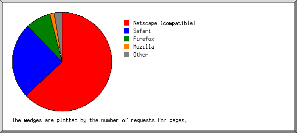
Listing browsers with at least 1 request for a page, sorted by the number of requests for pages.
| # | #reqs | #pages | browser |
|---|---|---|---|
| 1 | 336 | 322 | Netscape (compatible) |
| 2 | 215 | 192 | Safari |
| 144 | 124 | Safari/537 | |
| 42 | 41 | Safari/604 | |
| 28 | 26 | Safari/605 | |
| 1 | 1 | Safari/534 | |
| 3 | 76 | 62 | Firefox |
| 49 | 47 | Firefox/120 | |
| 25 | 13 | Firefox/139 | |
| 1 | 1 | Firefox/136 | |
| 1 | 1 | Firefox/83 | |
| 4 | 15 | 12 | Mozilla |
| 5 | 4 | 4 | Scrapy |
| 4 | 4 | Scrapy/2 | |
| 6 | 4 | 4 | python-httpx |
| 4 | 4 | python-httpx/0 | |
| 7 | 7 | 4 | Go-http-client |
| 7 | 4 | Go-http-client/1 | |
| 8 | 1 | 1 | MOT-V177 |
| 1 | 1 | MOT-V177/0 | |
| 9 | 1 | 1 | Python |
| 1 | 1 | Python/3 | |
| 10 | 1 | 1 | MSIE |
| 1 | 1 | MSIE/10 | |
| 2 | 0 | [not listed: 1 browser] |
(Go To: Top | General Summary | Monthly Report | Daily Summary | Hourly Summary | Domain Report | Organization Report | Failed Referrer Report | Referring Site Report | Browser Report | Browser Summary | Operating System Report | Status Code Report | File Size Report | File Type Report | Directory Report | Request Report)
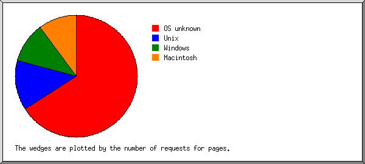
Listing operating systems, sorted by the number of requests for pages.
| # | #reqs | #pages | OS |
|---|---|---|---|
| 1 | 361 | 342 | OS unknown |
| 2 | 136 | 112 | Unix |
| 136 | 112 | Linux | |
| 3 | 92 | 88 | Macintosh |
| 4 | 72 | 61 | Windows |
| 68 | 58 | Windows NT | |
| 4 | 3 | Unknown Windows | |
| 5 | 1 | 0 | Known robots |
(Go To: Top | General Summary | Monthly Report | Daily Summary | Hourly Summary | Domain Report | Organization Report | Failed Referrer Report | Referring Site Report | Browser Report | Browser Summary | Operating System Report | Status Code Report | File Size Report | File Type Report | Directory Report | Request Report)
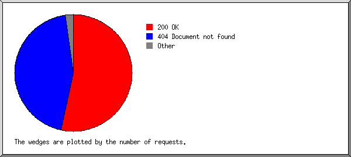
Listing status codes, sorted numerically.
| #reqs | status code |
|---|---|
| 657 | 200 OK |
| 1 | 301 Document moved permanently |
| 6 | 302 Document found elsewhere |
| 14 | 304 Not modified since last retrieval |
| 650 | 404 Document not found |
| 3 | 4xx [Miscellaneous client/user errors] |
(Go To: Top | General Summary | Monthly Report | Daily Summary | Hourly Summary | Domain Report | Organization Report | Failed Referrer Report | Referring Site Report | Browser Report | Browser Summary | Operating System Report | Status Code Report | File Size Report | File Type Report | Directory Report | Request Report)
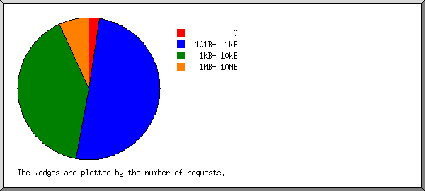
| size | #reqs | %bytes |
|---|---|---|
| 0 | 21 | |
| 1B- 10B | 0 | |
| 11B- 100B | 0 | |
| 101B- 1kB | 299 | 0.26% |
| 1kB- 10kB | 300 | 1.48% |
| 10kB-100kB | 0 | |
| 100kB- 1MB | 0 | |
| 1MB- 10MB | 51 | 98.27% |
(Go To: Top | General Summary | Monthly Report | Daily Summary | Hourly Summary | Domain Report | Organization Report | Failed Referrer Report | Referring Site Report | Browser Report | Browser Summary | Operating System Report | Status Code Report | File Size Report | File Type Report | Directory Report | Request Report)
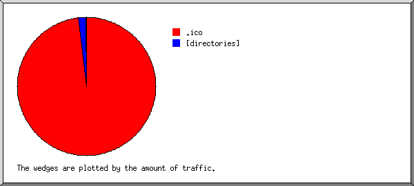
Listing extensions with at least 0.1% of the traffic, sorted by the amount of traffic.
| #reqs | %bytes | extension |
|---|---|---|
| 51 | 98.27% | .ico |
| 612 | 1.68% | [directories] |
| 8 | 0.05% | [not listed: 2 extensions] |
(Go To: Top | General Summary | Monthly Report | Daily Summary | Hourly Summary | Domain Report | Organization Report | Failed Referrer Report | Referring Site Report | Browser Report | Browser Summary | Operating System Report | Status Code Report | File Size Report | File Type Report | Directory Report | Request Report)
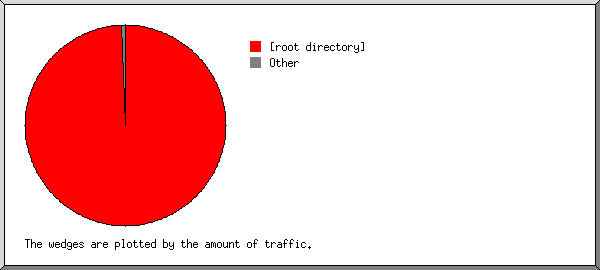
Listing directories with at least 0.01% of the traffic, sorted by the amount of traffic.
| #reqs | %bytes | directory |
|---|---|---|
| 330 | 99.55% | [root directory] |
| 46 | 0.14% | /vrs/ |
| 15 | 0.04% | /planroute/ |
| 4 | 0.04% | /cgi-sys/ |
| 42 | 0.03% | /funktionen/ |
| 39 | 0.03% | /datenschutz/ |
| 39 | 0.03% | /impressum/ |
| 37 | 0.03% | /support/ |
| 37 | 0.03% | /mvv/ |
| 37 | 0.03% | /vbb/ |
| 37 | 0.03% | /hvv/ |
| 8 | 0.01% | [not listed: 2 directories] |
(Go To: Top | General Summary | Monthly Report | Daily Summary | Hourly Summary | Domain Report | Organization Report | Failed Referrer Report | Referring Site Report | Browser Report | Browser Summary | Operating System Report | Status Code Report | File Size Report | File Type Report | Directory Report | Request Report)
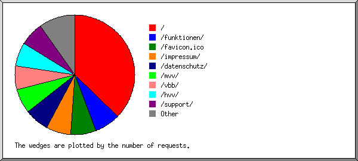
Listing files with at least 20 requests, sorted by the number of requests.
| #reqs | %bytes | last time | file |
|---|---|---|---|
| 279 | 1.28% | Nov/29/25 5:42 PM | / |
| 51 | 98.27% | Nov/28/25 7:21 PM | /favicon.ico |
| 42 | 0.03% | Nov/ 2/25 1:12 PM | /funktionen/ |
| 39 | 0.03% | Nov/ 2/25 1:14 PM | /impressum/ |
| 39 | 0.03% | Nov/ 2/25 1:13 PM | /datenschutz/ |
| 37 | 0.03% | Nov/ 2/25 1:15 PM | /vbb/ |
| 37 | 0.03% | Nov/ 2/25 1:13 PM | /mvv/ |
| 37 | 0.03% | Nov/ 2/25 1:14 PM | /hvv/ |
| 37 | 0.03% | Nov/ 2/25 1:14 PM | /support/ |
| 73 | 0.23% | Nov/30/25 2:05 AM | [not listed: 11 files] |